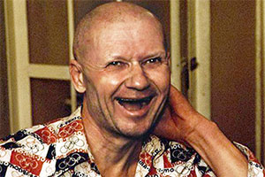

Андре́й Рома́нович Чикати́ло
(16 октября 1936, Яблочное, Харьковская область — 14 февраля 1994),
Новочеркасск, Ростовская область) — советский серийный убийца, насильник, педофил, некросадист, некрофил и каннибал.
Ещё до начала серии убийств он, работая учителем, совершал развратные действия в отношении своих несовершеннолетних
учеников. В дальнейшем в период с 1982 по 1990 годы Чикатило совершил в Ростовской области и других регионах СССР 43
доказанных убийства. Следствие предъявило ему обвинение в совершении 53 убийств, сам преступник сознался в 56,
а по оперативным сведениям, маньяк убил более 65 человек. В приговоре суда первой инстанции значилось 52 убийства,
датировавшиеся периодом с 1978 по 1990 годы, из которых 9 были исключены из приговора Верховным Судом РФ за
недоказанностью. Среди эпизодов, исключённых из приговора, было убийство Елены Закотновой.
Ранее за него был осуждён и казнён Александр Кравченко,, приговор которому был посмертно отменён. Андрей Чикатило
был признан вменяемым, приговорён к смертной казни и расстрелян в Новочеркасской тюрьме.
